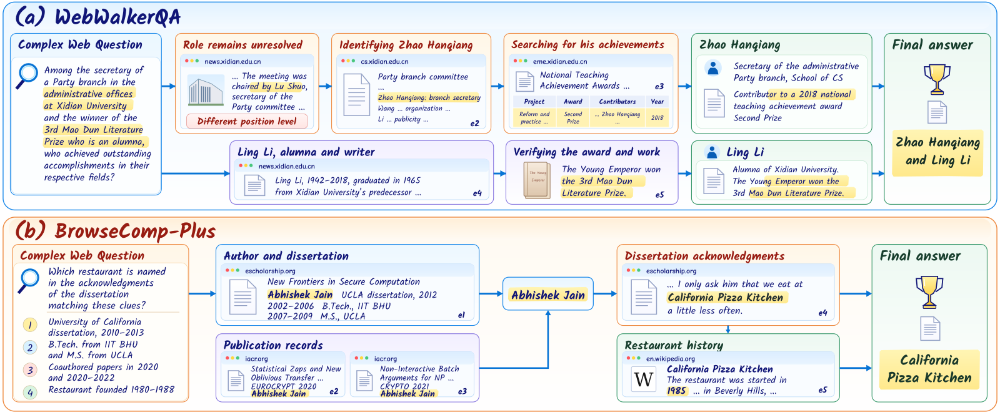

目录 · 9 节
1只对上一条线索的名字，会把后面的检索带偏2一道题在 PCG-RAG 里怎么走3候选名先当搜索词，缺的条件写下来接着搜4查的时候用候选名，答的时候用原条件5最终生成时，答案要带着认出主体的那几页6两个数据集上都领先，最强对手各不相同7消融：父答案填进下游查询这一步最值钱8带着来源链生成：27 道题里多对 2 道9成本：比最强对手省，但不是最省的PCG-RAG 针对的是复杂网页问答里一个很具体的错误：搜到一个只对上部分线索的名字，就把它当成答案往下查。它让这个名字继续当搜索词，但只有当证据把它和题目的全部条件连起来，才接受它当答案。
只对上一条线索的名字，会把后面的检索带偏
这类题来自 BrowseComp-Plus、WebWalkerQA 这样的复杂网页问答数据集。题目不直接给出实体名，而是用几条线索描述它，再问它的某个关系。论文开篇的例子是：「哪家建筑事务所重新设计了那座后来变成美术馆、2000 年开馆的伦敦电厂？」系统得先从「伦敦电厂、美术馆、2000 年开馆」三条线索认出是哪座电厂，再去查它的建筑师。
难在这三条线索散在不同页面上。第一轮检索很可能先命中 Wikipedia 上 Battersea 电厂的页面：它确实是伦敦的电厂，但页面没提美术馆，也没提 2000 年。这时手里的 Battersea 只对上了三条里的一条。这个名字又不是没用，带着它去搜，比拿一整段描述去搜具体得多。名字有用却未经核实，难点就在怎么用它。
现有的多步 RAG 会把上一步的结果填进下一步的查询。IRCoT、ReAct 边推理边检索；ReWOO、LQT（把子查询组织成一棵逻辑查询树的方法）、LogicRAG 先把题目拆成有依赖关系的子问题，再把上游答案填进下游问题的空位。放到这道题上，第一步认出 Battersea，第二步就成了「谁重新设计了 Battersea」。检索返回 wilkinsoneyre.com 上「WilkinsonEyre 设计了 Battersea 电厂改造」的页面，这一页完全支持第二步的问题，系统于是答 WilkinsonEyre。
第二步的检索本身没出错，出错的是没人核实过的前提「Battersea」。正确答案要沿着没解决的两条线索去找：Tate 的官网写着 Bankside 电厂改成了 2000 年开馆的 Tate Modern，建筑方面的来源写着改造方是 Herzog & de Meuron。

PCG-RAG（Progressive Compositional Grounding RAG，作者给这套框架起的名字）的做法，是把 Battersea 这类名字明确标成「还在核实的候选」，和「已接受的答案」分开记账。以 Qwen3.8-27B 为底座，它在 BrowseComp-Plus 上的准确率是 71.33%，比这个数据集上最强的对比方法 WebThinker 高 5.43 个百分点。在 WebWalkerQA 上是 64.56%，比这个数据集上最强的 DeepHone 高 5.15 个点。两个数据集上的最强对手不是同一个方法。
一道题在 PCG-RAG 里怎么走
整套流程不训练任何模型，全部在推理时由同一个 LLM 按不同提示词完成。一道题依次经过四步：
| 步骤 | 输入 | 做什么 | 产出 |
|---|---|---|---|
| 问题拆解 | 原题 Q | 把题目拆成按依赖排序的子问题 | 一张子问题依赖图（DAG），JSON 格式 |
| Progressive Evidence Acquisition | 一个子问题和它能看到的段落 | 判断证据够不够；不够就记下候选和缺口，按缺口再搜 | 已接受的答案加引用，或候选加缺口 |
| Compositional Reasoning | 上游子问题的结果 | 检索时代入候选名，回答时保留没解决的原始条件 | 每个子问题的答案和直接引用 |
| Evidence Grounding | 已接受的答案和它们的来源链、输入预算 | 挑段落，只呈现来源齐全的中间答案 | 最终答案 |
示意：电厂题会被拆成两个子问题。Q1 是「哪座伦敦电厂后来变成了 2000 年开馆的美术馆？」，输出记作 x1。Q2 是「谁重新设计了 {x1}？」，它依赖 Q1。下面三节用这两个子问题把三个部件走一遍。
候选名先当搜索词，缺的条件写下来接着搜
拿到 Battersea 那一页时，最简单的做法有两种。一种是直接接受它，后面就会答 WilkinsonEyre。另一种是嫌它没核实、扔掉不用，下一次还拿整段描述去搜，等于放弃了一个能缩小范围的名字。
Progressive Evidence Acquisition 走中间路线。模型每看一批段落，就给当前子问题打一个状态：supported 表示答案在原题条件下已经成立；provisional 表示有一个带引用的候选，但还有缺口；insufficient 表示连候选都没有。只有 provisional 时才保留候选，其余情况清空。示意：Q1 第一次评估的输出大致长这样（字段名取自论文附录的提示词，段落编号是编的）：
{
"status": "provisional",
"answer": "Battersea Power Station",
"sources": ["p1"],
"missing": "是否改成了美术馆、是否 2000 年开馆",
"next_queries": ["Battersea Power Station art museum opened 2000",
"London power station converted art museum 2000"]
}下一次查询由候选名和缺口一起生成，也可以细读已打开的页面，或者沿页面上的链接跳转。假设新搜到 tate.org.uk 那一页，下一次评估就把候选换成 Bankside：三条线索都有引用支持，没有缺口，状态变成 supported。接受的条件很硬：答案非空、状态是 supported、引用对得上、缺口为空。接受后这个子问题的尝试就结束，否则继续搜，直到用完追加次数（BrowseComp-Plus 上每个子问题 4 次，WebWalkerQA 上 8 次）。
查的时候用候选名，答的时候用原条件
Q2 依赖 Q1，可 Q1 不一定已经解决。Compositional Reasoning 的规则是按依赖顺序逐个求解，上游没解决也照样尝试下游。关键在于，同一个下游问题会被写成两个版本。
检索种子用上游的候选名，回答任务保留上游没解决的原始条件，原题 Q 每次都一起给。
示意：假设 Q2 开跑时 Q1 还停在 provisional 的 Battersea。
- 检索种子：「Battersea Power Station redesign architect」，用来把搜索收窄。
- 回答任务：「谁重新设计了〔那座后来变成 2000 年开馆美术馆的伦敦电厂〕？」，用来判断证据够不够。
检索种子照样会搜回 WilkinsonEyre 那一页。可回答任务问的是「那座 2000 年开馆美术馆的前身」，这一页只说 Battersea 改造，接不上美术馆和年份，所以 Q2 只能停在 provisional，不会被接受。如果像 ReWOO 那样把 Battersea 同时填进两个版本，回答任务就成了「谁重新设计了 Battersea」，这一页完全支持，WilkinsonEyre 当场被接受。分开写两个版本，挡住的就是这一步。
上游一旦被接受（Q1 定为 Bankside），两个版本都代入 Bankside。反过来，下游也可以先于上游被接受：如果某一页同时写了「2000 年开馆的 Tate Modern 由 Bankside 电厂改建，设计方是 Herzog & de Meuron」，这一页自己就把主体和关系一起确立了，Q2 可以在 Q1 还没定论时直接被接受。
最终生成时，答案要带着认出主体的那几页
前两步走完，Q2 的答案 Herzog & de Meuron 已经被接受。可如果最后交给生成模型的只有 herzogdemeuron.com 那一页，生成模型看不到「这座电厂 2000 年变成了美术馆」的证据，也就没法把这个建筑事务所和题目问的那座电厂连起来。
最简单的做法是按和题目的相关度给段落排序，取前几段。示意：题目问的是「哪家建筑事务所重新设计了伦敦电厂」，WilkinsonEyre 页和 Herzog 页都在讲电厂改造的建筑师，相关度最高；Tate 页讲的是美术馆开馆，排得靠后。预算只够放两段时，Tate 页会被挤掉，生成模型手里是两座电厂、两个建筑师，却没有证据说哪一座才是 2000 年开馆的美术馆。
Evidence Grounding 的第一步是给每个已接受的答案攒一条来源链：它自己的直接引用，加上所有已接受上游答案的来源链。示意：Q1 的来源是 Tate 页，Q2 的直接引用是 Herzog 页，那么 Q2 的来源链就是这两页。没解决的上游不贡献来源，这时下游必须靠自己的引用把主体认出来。
第二步是挑段落。一个中间答案只有在它的整条来源链都进了上下文时，才会和答案一起呈现给生成模型。挑法是在预算内让能呈现的中间答案数最多，打平时取更短的 prompt。示意：三个已接受的答案，A 的来源链是 {p1}，B 继承了 A，来源链是 {p1, p2}，C 的来源链是 {p3, p4, p5}。预算只够放 3 段。放 {p1, p2} 能呈现 A、B 两个答案；放 {p3, p4, p5} 只能呈现 C 一个。所以选前者，剩下的 1 个空位再补其他存档段落。已接受的子问题不超过 10 个时精确枚举，更多时用贪心。
这样挑而不按相关度挑，是因为 Tate 页这种认出主体的段落，单看和题目不算相关，它的价值来自它连起来的那条关系。
两个数据集上都领先，最强对手各不相同
BrowseComp-Plus 有 830 题，所有方法在同一份固定网页语料上检索。WebWalkerQA 有 680 题，从官方给的入口网址出发，用 Exa 搜索并沿链接浏览。答案对不对由 DeepSeek-V4.1-Flash 按各数据集的参考答案判分。对比方法分两类：一类是自己决定搜什么、读什么的网页搜索 agent，如 WebThinker、Search-o1、Q2Q、DeepHone；另一类是显式组织检索证据的 RAG 方法，如 RADAR（按文档之间的相互支持和冲突来挑证据的方法）、LQT、LogicRAG。
| 方法 | BrowseComp-Plus | WebWalkerQA |
|---|---|---|
| WebThinker | 65.90 | 53.68 |
| Search-o1 | 65.30 | 55.15 |
| DeepHone | 55.30 | 59.41 |
| LQT | 60.00 | 56.76 |
| LogicRAG | 53.98 | 52.21 |
| RADAR | 31.69 | 44.12 |
| PCG-RAG | 71.33 | 64.56 |
PCG-RAG 在两个数据集上都排第一，而 WebThinker 和 DeepHone 各赢一个数据集。这说明它的领先不依赖某一种证据环境，固定语料检索和开放浏览下都成立。所有数字都是单次运行，没有多次重复的方差。
LQT 是 RAG 方法里最强的一个，它同样把子问题按依赖关系组织起来，PCG-RAG 比它高 11.33 和 7.80 个点。作者的解释是，有了依赖结构还不够，填进依赖空位的实体要靠新证据来确立。
消融：父答案填进下游查询这一步最值钱
消融各去掉一个部件，底座、检索资源和生成预算不变：
- 去掉 Progressive Evidence Acquisition：每个子问题只做初始检索和一次评估，有缺口也不再追加搜索。
- 去掉 Compositional Reasoning：子问题还在，但上游答案和候选不再填进下游查询，每个子问题各搜各的。
- 去掉 Evidence Grounding：生成时按相关度挑段落，中间答案照样呈现，但不要求带着完整来源链。
| 变体 | BrowseComp-Plus | WebWalkerQA |
|---|---|---|
| PCG-RAG | 71.33 | 64.56 |
| 去掉 Progressive Evidence Acquisition | 66.99 | 59.56 |
| 去掉 Compositional Reasoning | 57.95 | 57.65 |
| 去掉 Evidence Grounding | 66.63 | 59.41 |
在 BrowseComp-Plus 上，去掉 Compositional Reasoning 掉 13.38 点。另外两个部件各掉 4.34 和 4.70 点，加起来是 9.04 点，还不到前者。这说明在大语料里，用上游的名字把下游查询写具体，是三步里最值分数的一步。这个消融关掉的是「填进查询」，所以它衡量的是候选名当搜索词那一半的价值。
在 WebWalkerQA 上三项损失接近，分别是 5.00、6.91、5.15。作者的解释是 WebWalkerQA 给了入口页，靠描述在大语料里定位主体的压力小一些。另外，去掉 Progressive Evidence Acquisition 后在 BrowseComp-Plus 上仍有 66.99，略高于 WebThinker 的 65.90，所以不能说每个部件都缺一不可才能赢过对手。
带着来源链生成：27 道题里多对 2 道
Evidence Grounding 单独的效果，作者用 27 道 BrowseComp-Plus 依赖题来看。这些题的共享检索证据里已经有完整的「认出主体 + 关系」支持，两种生成方式用同样的证据和预算：一种按相关度独立挑段落，一种是 PCG-RAG 的来源链挑法。「联合支持」指生成上下文里的原文段落能不能把题目描述的实体和所问关系连起来。
15 道跨页题里，相关度挑法有 1 道缺了认主体的段落，联合支持和准确率都是 93.3%，PCG-RAG 都是 100%。12 道单页题两边联合支持都是 100%，准确率从 83.3% 到 91.7%。合起来是 24/27 对 26/27。这说明方向和电厂题的示意一致：跨页时认主体的那一页容易被相关度挤掉。可差距只有 2 道题，27 道还是从 40 道里去掉支持不完整的 13 道后剩下的，而且来源挑法和中间答案的呈现方式是一起换的，分不清各自贡献多少。

图 4(b) 是这种跨页拼接的完整样子。题目问的是一篇学位论文致谢里提到的餐厅，线索是学校、学位年份、合作论文和餐厅创立年份。致谢那一页单看只是一句「少去几次 California Pizza Kitchen」，靠学位论文和发表记录认出 Abhishek Jain 之后，它才成了这道题的答案。
另一组证据来自 MuSiQue（每题需要 2 到 4 步推理、标注了支撑段落的多跳问答集）。R@5 是前 5 段覆盖标注支撑段的比例，All@5 是前 5 段把支撑段全部找齐的题目占比。PCG-RAG 的 R@5 是 83.91，All@5 是 64.30，比 MGranRAG 的 80.60 和 59.90 都高。4 跳题的 All@5 只有 16.87，找齐证据的比例仍很低。这组实验关掉了追加搜索，每个子问题只尝试一次，所以它说明不了 Progressive Evidence Acquisition 的作用。
图 3 的三条 BrowseComp-Plus 轨迹里，上游的实体记录一直是错的，下游答案却是对的。原因是每个下游任务都带着原题 Q 和没解决的原始条件，新证据可以直接确立正确的主体和关系。上游的错误记录并没有被改正，只是没有带偏下游。
成本：比最强对手省，但不是最省的
在 BrowseComp-Plus 上，PCG-RAG 每题用 47.40K token、调用 8 次、耗时约 600 秒。WebThinker 每题用 278.49K token、调用 56 次、耗时 1591 秒，所以 PCG-RAG 的 token 少 82.98%，延迟少 62.31%。在 WebWalkerQA 上，它比 DeepHone 的 token 少 70.86%，延迟少 51.31%。这说明和这两个最强对手相比，准确率的提升没有用更多的 token 去换；BrowseComp-Plus 上调用次数也更少。
和 token 用量相近的 LogicRAG 比（BrowseComp-Plus 上 47.40K 对 51.24K），PCG-RAG 的准确率高 17.35 点，WebWalkerQA 上高 12.35 点。这说明在 token 用量接近的比较中，PCG-RAG 的准确率仍更高。它也不是最省的：BrowseComp-Plus 上 RADAR 的 token 更少、只要约 173 秒，但准确率只有 31.69%。PCG-RAG 的 token 大部分是输入，所以它的成本主要花在每次调用要读的证据上。
回到电厂题：Battersea 这个名字该用，但只能用来搜。PCG-RAG 的三个部件分别负责一件事：带着缺口继续找证据，查和答分开写，最后把认出主体的那几页和答案一起交给生成模型。消融显示，在大语料里最值钱的是第二件里「用名字去搜」的那一半；另外两件各值 4 到 5 个点。
读完这篇，你觉得
夜读鸮记下了，谢谢你的反馈。
点一下即可，无需登录；再点一次撤回。只统计匿名次数，不记录你是谁。
相关论文RELATED
 Retrieval · 2026-11-12DocFS: File Systems as Agentic Reasoning Environments for Complex Multimodal Document Question Answering让 VLM agent 回答很长的图文混排文档，难点常常不在模型，而在文档怎么摆给它。DocFS 的做法很朴素：把文档改造成一个文件系统，章节变成嵌套目录，正文、图、表、公式各存成文件，再加上索引文件和记录图文对应关系的关联文件。agent 只用列目录、关键词搜索、读文件这几个现成操作，先定位候选证据，再顺着关联文件补全，最后回原始页面核对。在 MMLongBench-Doc 上，它的准确率比最强基线 DocLens 高 2.9 个点，推理阶段平均耗时从 359.9 秒降到 43.9 秒。文件系统本身就把结构和配套工具配好了对，不用再为每种文档结构单独设计接口。
Retrieval · 2026-11-12DocFS: File Systems as Agentic Reasoning Environments for Complex Multimodal Document Question Answering让 VLM agent 回答很长的图文混排文档，难点常常不在模型，而在文档怎么摆给它。DocFS 的做法很朴素：把文档改造成一个文件系统，章节变成嵌套目录，正文、图、表、公式各存成文件，再加上索引文件和记录图文对应关系的关联文件。agent 只用列目录、关键词搜索、读文件这几个现成操作，先定位候选证据，再顺着关联文件补全，最后回原始页面核对。在 MMLongBench-Doc 上，它的准确率比最强基线 DocLens 高 2.9 个点，推理阶段平均耗时从 359.9 秒降到 43.9 秒。文件系统本身就把结构和配套工具配好了对，不用再为每种文档结构单独设计接口。 Retrieval · 2026-10-29Tessera: Structure-Completed Evidence Units for Web Retrieval-Augmented Generation问维基百科《欢乐糖果屋》的制片人是谁，答案就在页面信息框的制片一行，可文本抽取把这一格里的两个名字弄丢了，读者模型只看到导演，于是答错。这篇论文在整个英文维基百科上把答案证据从网页源码一路追到读者输入，发现这种丢失很普遍：7.6% 的问题证据根本没完整进索引，其中 81% 是表格单元格、表头或图注。Tessera 检索照旧，只在读之前把排名靠前的网页重新拆成一行表格、一个列表项这样的小单元，补上标题、章节和表头，再挑相关的装进同样的 token 预算。文本和截图两类流水线的答对率都提高 5 到 6 个点。
Retrieval · 2026-10-29Tessera: Structure-Completed Evidence Units for Web Retrieval-Augmented Generation问维基百科《欢乐糖果屋》的制片人是谁，答案就在页面信息框的制片一行，可文本抽取把这一格里的两个名字弄丢了，读者模型只看到导演，于是答错。这篇论文在整个英文维基百科上把答案证据从网页源码一路追到读者输入，发现这种丢失很普遍：7.6% 的问题证据根本没完整进索引，其中 81% 是表格单元格、表头或图注。Tessera 检索照旧，只在读之前把排名靠前的网页重新拆成一行表格、一个列表项这样的小单元，补上标题、章节和表头，再挑相关的装进同样的 token 预算。文本和截图两类流水线的答对率都提高 5 到 6 个点。 Retrieval · 2026-11-04MCTS-KBQA: Monte Carlo Tree Search with Information Gain Rewards for Knowledge Base Question Answering用 MCTS 帮大模型在知识库上一步步查答案时，中间步骤可以不训练奖励模型、也不模拟到底，就打出有用的分。办法是把截至这一步的查询记录交给一个开源指令模型，分别算带上原问题和不带原问题时这段记录的困惑度。带上问题后困惑度降得越多，说明查到的东西和问题越相关，这一步的奖励就越高。以往要么每一步都模拟到底、再给最终状态打分，代价很高；要么另训一个奖励模型，需要大量数据。新办法每个新节点只要两次前向计算。在 4 个 KBQA 基准上，它稳定好于只走一条路径、不做搜索的方法；和模拟到底的经典树搜索比，准确率和成本的权衡一般更好。
Retrieval · 2026-11-04MCTS-KBQA: Monte Carlo Tree Search with Information Gain Rewards for Knowledge Base Question Answering用 MCTS 帮大模型在知识库上一步步查答案时，中间步骤可以不训练奖励模型、也不模拟到底，就打出有用的分。办法是把截至这一步的查询记录交给一个开源指令模型，分别算带上原问题和不带原问题时这段记录的困惑度。带上问题后困惑度降得越多，说明查到的东西和问题越相关，这一步的奖励就越高。以往要么每一步都模拟到底、再给最终状态打分，代价很高；要么另训一个奖励模型，需要大量数据。新办法每个新节点只要两次前向计算。在 4 个 KBQA 基准上，它稳定好于只走一条路径、不做搜索的方法；和模拟到底的经典树搜索比，准确率和成本的权衡一般更好。 Retrieval · 2026-11-12OpticalRAG: Pixel-Space Compression for Token-Efficient Retrieval-Augmented GenerationRAG 想省 token，常见做法是在文本上删词或做摘要，压得越狠，丢的细节越多。OpticalRAG 换了个方向：把文档渲染成页面图片，用冻结的视觉编码器编成视觉 token，检索和压缩都在这些视觉 token 上做。文本 query 经过一个轻量投影进入同一个视觉特征空间去找相关内容，再由一个以 query 为条件的交叉注意力小模块，把检索到的 256 个视觉 token 压成 16 个交给大模型。在 LongBench-v2 上，它比不做检索的底座模型高 5.17 分。另一个基准上，保留几百上千个文本 token 的压缩方法原始分更高，它的长处是用极少的 token 拿到接近的分数。
Retrieval · 2026-11-12OpticalRAG: Pixel-Space Compression for Token-Efficient Retrieval-Augmented GenerationRAG 想省 token，常见做法是在文本上删词或做摘要，压得越狠，丢的细节越多。OpticalRAG 换了个方向：把文档渲染成页面图片，用冻结的视觉编码器编成视觉 token，检索和压缩都在这些视觉 token 上做。文本 query 经过一个轻量投影进入同一个视觉特征空间去找相关内容，再由一个以 query 为条件的交叉注意力小模块，把检索到的 256 个视觉 token 压成 16 个交给大模型。在 LongBench-v2 上，它比不做检索的底座模型高 5.17 分。另一个基准上，保留几百上千个文本 token 的压缩方法原始分更高，它的长处是用极少的 token 拿到接近的分数。 Retrieval · 2026-11-11Lightfoot: Graph Retrieval-Augmented Generation with Exact, Model-Free Document DeletionGraphRAG 上线后有两笔账论文很少算：建图花多少钱，删文档有多麻烦。合同到期或用户要求删除时，要把一篇文档和由它派生的内容都清掉，可混了多篇文档内容的实体摘要很难拆干净。Lightfoot 规定图里每条记录都只由单段的抽取结果算出来，每段只调一次模型，检索不调模型，删文档就是数据库操作，建图成本在三个数据集上也都最低。在 MuSiQue 全量语料上删掉 10% 的文档后，图和只用剩余文档重建的结果完全相同，LightRAG 删同样的文档要调 2187 次模型、跑 3.7 小时。代价是准确率和 HippoRAG 2 互有胜负，在 2WikiMultiHopQA 上明显落后。能精确删除，靠的是没有任何记录来自读过多段内容的模型调用，有合规删除需求的团队可以照这条约束设计索引。
Retrieval · 2026-11-11Lightfoot: Graph Retrieval-Augmented Generation with Exact, Model-Free Document DeletionGraphRAG 上线后有两笔账论文很少算：建图花多少钱，删文档有多麻烦。合同到期或用户要求删除时，要把一篇文档和由它派生的内容都清掉，可混了多篇文档内容的实体摘要很难拆干净。Lightfoot 规定图里每条记录都只由单段的抽取结果算出来，每段只调一次模型，检索不调模型，删文档就是数据库操作，建图成本在三个数据集上也都最低。在 MuSiQue 全量语料上删掉 10% 的文档后，图和只用剩余文档重建的结果完全相同，LightRAG 删同样的文档要调 2187 次模型、跑 3.7 小时。代价是准确率和 HippoRAG 2 互有胜负，在 2WikiMultiHopQA 上明显落后。能精确删除，靠的是没有任何记录来自读过多段内容的模型调用，有合规删除需求的团队可以照这条约束设计索引。 Retrieval · 2026-11-05From Logs to Faults: Reference-Free Fault Localization for Retrieval-Augmented Generation PipelinesRAGLog 只读 RAG 流水线每次运行留下的调用日志，不需要标准答案，也不用改代码，就能指出这次运行是哪个环节出了错。这件事有用，是因为中间出了错，最终答案却可能是对的。在五条开源流水线的自然运行里，37% 至少有一个环节出错，其中超过三分之一照样答对了，只看答案发现不了。它逐个环节检查：改写后的查询有没有丢掉原问题里的人名、数字和日期，检索回来的段落里有没有一段真正含有答案，重排有没有把含答案的那段挤出去，答案在给定材料里有没有依据。每个环节再由各自训练好的分类器判断是否出错。在自然发生的故障上，它定位出错环节的 F1 是 0.73，Claude Code 是 0.58。排查 RAG 故障时，日志本身就够做第一轮筛查。
Retrieval · 2026-11-05From Logs to Faults: Reference-Free Fault Localization for Retrieval-Augmented Generation PipelinesRAGLog 只读 RAG 流水线每次运行留下的调用日志，不需要标准答案，也不用改代码，就能指出这次运行是哪个环节出了错。这件事有用，是因为中间出了错，最终答案却可能是对的。在五条开源流水线的自然运行里，37% 至少有一个环节出错，其中超过三分之一照样答对了，只看答案发现不了。它逐个环节检查：改写后的查询有没有丢掉原问题里的人名、数字和日期，检索回来的段落里有没有一段真正含有答案，重排有没有把含答案的那段挤出去，答案在给定材料里有没有依据。每个环节再由各自训练好的分类器判断是否出错。在自然发生的故障上，它定位出错环节的 F1 是 0.73，Claude Code 是 0.58。排查 RAG 故障时，日志本身就够做第一轮筛查。 Retrieval · 2026-11-02Retrieving from Your Own Mistakes: On-Policy Training of Embedding Models for Multi-Hop Retrieval-Augmented Generation多跳检索里的链式 embedding 检索器，训练和上线时看到的历史不一致，这篇论文给出一个不加大模型调用的修法。这类检索器每一步把问题和已找到的段落拼在一起再找下一段，训练时历史全是正确段落，上线后却常混进它自己找错的段落。在四跳的 MuSiQue 问题上，到第三步已有 70% 的检索状态带了错段。作者每轮训练都让当前模型自己跑一遍，拿它真实走到的状态来训练，目标设为还没找到的最早那段正确段落。同样配方下，前五段里把证据找全的问题比例从 44.6% 提到 50.5%。
Retrieval · 2026-11-02Retrieving from Your Own Mistakes: On-Policy Training of Embedding Models for Multi-Hop Retrieval-Augmented Generation多跳检索里的链式 embedding 检索器，训练和上线时看到的历史不一致，这篇论文给出一个不加大模型调用的修法。这类检索器每一步把问题和已找到的段落拼在一起再找下一段，训练时历史全是正确段落，上线后却常混进它自己找错的段落。在四跳的 MuSiQue 问题上，到第三步已有 70% 的检索状态带了错段。作者每轮训练都让当前模型自己跑一遍，拿它真实走到的状态来训练，目标设为还没找到的最早那段正确段落。同样配方下，前五段里把证据找全的问题比例从 44.6% 提到 50.5%。 Retrieval · 2026-04-17From Relevance to Authority: Authority-aware Generative Retrieval in Web Search EnginesNAVER 想让生成式检索在相关度差不多时偏向可信来源。做法是让视觉语言模型看网站截图和文字打 0 到 100 的权威分，再把这个分数当 GRPO 的奖励，训练一个直接生成网站域名的 3B 模型；上线时不替换原排序，只给生成的网站加分。离线 P@3 从 0.3555 提到 0.3856，和 14B 模型打平，R@5 还略低。奖励里只有权威分，相关性全靠 SFT 和 KL 约束兜住。线上 A/B 的对照组本身也有涨幅，口径不清，需要打折看。
Retrieval · 2026-04-17From Relevance to Authority: Authority-aware Generative Retrieval in Web Search EnginesNAVER 想让生成式检索在相关度差不多时偏向可信来源。做法是让视觉语言模型看网站截图和文字打 0 到 100 的权威分，再把这个分数当 GRPO 的奖励，训练一个直接生成网站域名的 3B 模型；上线时不替换原排序，只给生成的网站加分。离线 P@3 从 0.3555 提到 0.3856，和 14B 模型打平，R@5 还略低。奖励里只有权威分，相关性全靠 SFT 和 KL 约束兜住。线上 A/B 的对照组本身也有涨幅，口径不清，需要打折看。
讨论
欢迎补充实验细节、复现经验或不同看法。需 GitHub 登录。
正在加载讨论…